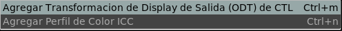

El Menu del Monitor

El menu del monitor permite atar una Transformación del Display de Salid ( CTL Output Display Transform u ODT ) para completar el flujo de trabajo de ACES.
La ODT emula el periférico donde va a verse la imagen. Es usualmente un monitor pero podría ser una transformación de emulación de film.
El menú de monitor tambien soporta agregar un Perfil de Montior ICC. En ese caso, el perfil de monitor debería aceptar una imagen en XYZ como entrada y la salida puede ser cualquiera como sRGB. Con la llegada de ACES CTL, esta opción está obsoleta.